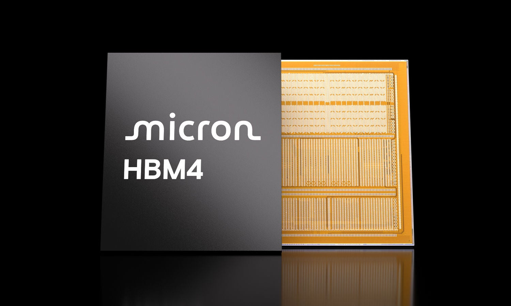
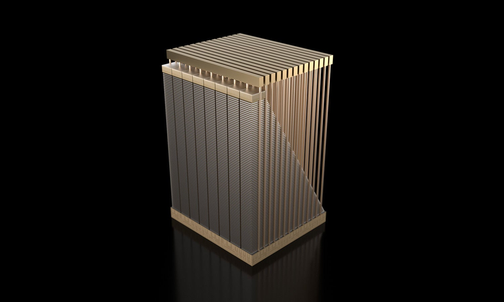
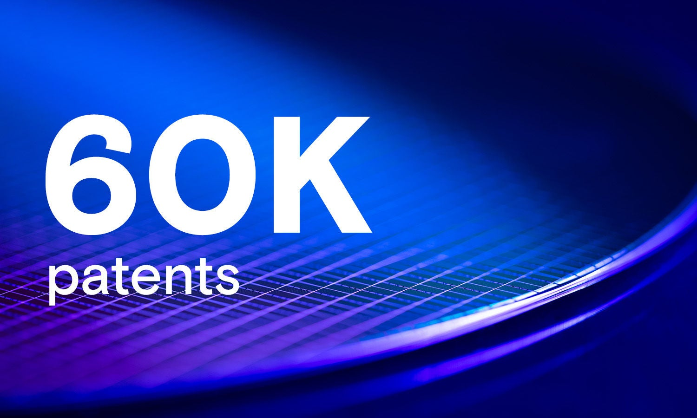
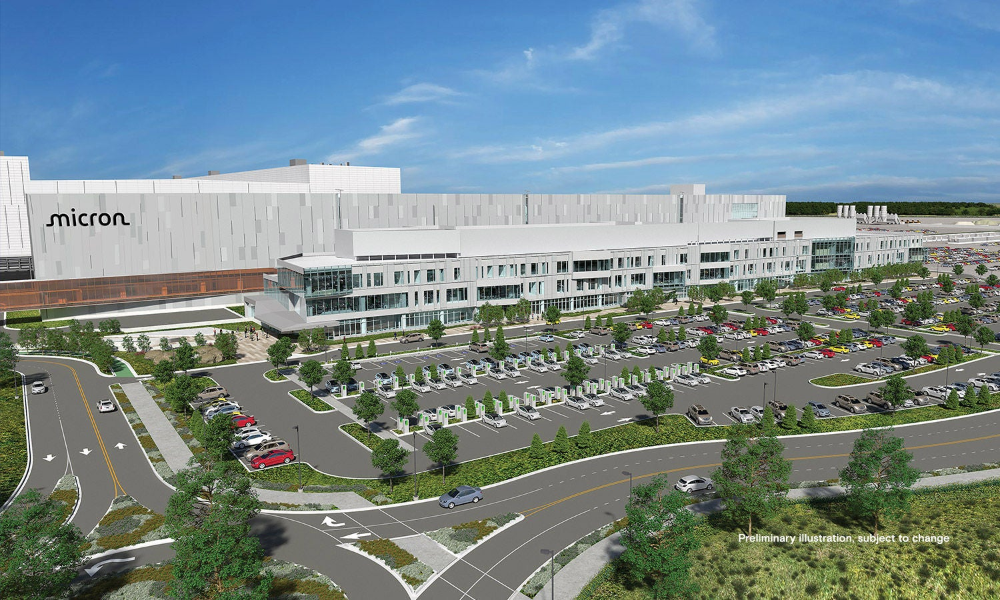

基于 2026-06-24 FY2026 Q3 财报
美光不只是卖内存，它正在成为 AI 基础设施的“带宽与容量阀门”。
这份报告把 Micron Technology 从经营业务、财务爆发、产品路线、AI产业链位置、战略客户协议、竞争格局到风险框架系统拆开。结论很直接：AI 训练、推理、上下文存储和边缘智能同时把 DRAM、HBM、NAND、SSD 推到战略层，而美光正站在这个瓶颈的中心。

1. 昨天的财报为什么震撼
从周期性复苏，跳成了结构性供给短缺。
FY2026 Q3 截至 2026-05-28。美光发布收入 414.56 亿美元、非 GAAP EPS 25.11 美元，并给出下一季 500 亿美元收入中值指引。更关键的是，管理层称 DRAM 与 NAND 供需紧张将持续到 2027 年之后。
美光的定价权来自“稀缺位置”
AI 服务器不是只缺 GPU。HBM、DDR5、LPDRAM、企业级 SSD 都被拉进同一个供给瓶颈，先进制程、封装和洁净室产能扩张又很慢。
FY2026 Q4 继续抬高台阶
公司指引收入 500 亿美元上下 10 亿美元，毛利率约 86%，非 GAAP EPS 为 31 美元上下 1 美元。[1]
16 份战略客户协议
约覆盖 20% DRAM 量、三分之一 NAND 量；14 份协议的最低合同收入约 1000 亿美元，并预计获得 220 亿美元客户押金及相关财务承诺。[2]
2. 美光到底做什么
它是美国最核心的内存与存储制造商。
美光的产品覆盖 DRAM、HBM、DDR、LPDDR、GDDR、NAND、SSD、UFS、e.MMC、NOR 等。2025 年公司重组为四个市场导向业务单元，以更贴近 AI 从云到边缘的需求。
DRAM 是主体，NAND 正在被 AI 存储拉动
DRAM 收入同比 +343%，NAND 收入同比 +361%。[2]
数据中心已经成为收入重心
四个业务单元分别覆盖 hyperscale、OEM/企业数据中心、移动/PC、汽车/工业/消费嵌入式。[1][4]
算力旁边的“工作记忆”
包括 HBM、DDR、LPDDR、GDDR。HBM 使用 TSV 3D 堆叠，在高带宽和能效上更适合 AI 与 HPC。DDR5 提供服务器主存扩展，LPDDR/SOCAMM 面向低功耗高容量系统。[4]
上下文和数据湖的“长期记忆”
NAND 是非易失存储。企业级 SSD 通过更高容量、低功耗和高吞吐，替代部分 HDD 并承接 AI context store、训练数据、推理检索等工作负载。[4][8]
从消费品转向战略客户
美光 2025-12-03 宣布退出 Crucial 消费者业务，继续保留保修支持，把供给优先给数据中心、AI 和更大客户。[10]
3. 它在 AI 链条里扮演什么角色
GPU 决定峰值算力，内存决定算力能不能被喂饱。
AI 训练和推理越来越受制于数据移动：模型权重、KV cache、长上下文、检索数据、agent 执行状态、日志和样本都要在不同层级的内存与存储中快速流动。
AI 基础设施中的 Micron 位置图
前沿模型 / 应用
Claude、云厂商、搜索、agent、机器人、车载智能。
训练推理长上下文
加速器 / CPU
NVIDIA GPU、ASIC、CPU rack 形成异构算力池。
Vera RubinASIC
HBM4
紧贴加速器，解决带宽和能效瓶颈，是 AI 训练和高端推理最稀缺层。
36GB 12H48GB 16H
DDR5 / LPDRAM
服务器主存和 CPU 侧 agent 控制平面，支持更高容量与低功耗。
RDIMMSOCAMM2
NAND / SSD
承载 context store、训练数据、高速检索和 HDD 替代。
PCIe Gen6245TB QLC
美光自己的表述是：AI 系统性能在架构上依赖内存子系统的性能和容量；这让内存在 AI 世界中升级为战略资产。[2]

G9 NAND / 企业SSD
AI 的存储瓶颈
TrendForce 指出，AI 服务器基础设施对高速传输和大容量存储需求激增，推动企业 SSD 和高容量 QLC SSD。[8]

先进制程 / EUV
扩产不是拧开水龙头
管理层强调绿地晶圆厂建设复杂、耗时，受工人、监管、能源基础设施和技术迁移影响；HBM 代际提升还会挤压非 HBM 供给。[2]
4. 未来发展：三条主线
客户锁量、产品升级、全球扩产，会决定这轮周期能走多远。
这部分要同时看机会和约束：长期协议提升收入可见度，但资本开支、良率、客户认证和新产能爬坡会决定利润质量。
从现货周期转向长期配给
协议通常为 2026 至 2030 年五年期，汽车协议多为三年；带有 take-or-pay 约束和价格地板，使美光的下行毛利率保护显著强于历史周期。[2]
HBM4 已出货，HBM4E 看 2027
FY2026 Q3 财报称 HBM4 已为主要客户平台高量出货，HBM4E 基于 1-gamma DRAM，预计 2027 年量产。[1]
美国与亚洲同时扩张
ID1 预计 2027 年中首片晶圆，ID2 预计 2028 年末；台湾 Tongluo 站点 2027 年中贡献出货，新加坡将成为 HBM 先进封装中心之一。[2]

美国扩产：约 2000 亿美元长期愿景
两座 Idaho fab、最多四座 New York fab、Virginia 现代化、HBM 先进封装和研发。[5]
关键节点
1978Boise 牙科诊所地下室，四人半导体设计公司成立。[9]
1984推出世界最小 256K DRAM，并在 NASDAQ 上市。[9]
2022232 层 NAND，宣布纽约与 Idaho 大型投资。[9]
20251-gamma DRAM、HBM4 早期出货、退出 Crucial 消费渠道。[9][10]
2026Q3 收入 414.56 亿美元，16 份 SCA。[1][2]
2027+HBM4E、ID1、Tongluo、新加坡 HBM 封装陆续贡献。
5. 竞争格局
三巨头仍主导高端内存，但中国与 NAND 同盟在边缘挤压。
美光最直接的对手是 Samsung 与 SK hynix；NAND 里还要看 Kioxia、SanDisk；成熟 DRAM 与部分消费链条则受到 CXMT、YMTC 的长期影响。
Micron 第三，但正在受益于价格重估
TrendForce 同时指出 4Q25 常规 DRAM 合约价大幅上涨，供应商定价权增强。[6]
AI 服务器把企业 SSD 拉进紧缺区
TrendForce 称 2026 年 NAND 新增产能几乎没有，AI 需求强劲使短缺可能持续全年。[8]
6. 投资与经营风险框架
最强的周期，也可能在错误扩产和需求反转时变脸。
这不是投资建议，而是理解公司质量时要盯的变量。美光的好处很明确，风险同样不能轻描淡写。
AI 推理比训练更“吃内存”
如果 agent、长上下文、企业检索、机器人和车载智能持续扩张，HBM、服务器 DRAM 和企业 SSD 的单位需求可能继续上修。
SCA 改写周期底部
take-or-pay 和价格地板让美光获得历史少见的收入和毛利率可见度。若客户继续签约，估值框架会从周期股向基础设施供应商迁移。
HBM 良率与客户认证
HBM4/HBM4E 的性能、良率、封装产能和主要客户平台认证，是能否把订单变成高质量利润的关键。
历史周期仍在
内存行业过去多次因扩产、库存和价格下行发生利润坍塌。SCA 能缓冲，但不能完全消灭周期。
资本开支与建设延迟
绿地 fab 耗资巨大、周期长，受劳动力、能源、许可、设备交付和政策影响；若需求放缓，投资回报会承压。
地缘与客户集中
美光面向全球生产和销售，竞争对手、出口管制、中国供应链、客户议价和单一平台依赖都可能影响利润与估值。
如何理解美光
| 问题 | 答案 | 应盯指标 |
|---|---|---|
| 它还是周期股吗？ | 是，但 AI 和 SCA 正在抬高周期底部。 | 价格、库存、SCA 执行、毛利率。 |
| 它在 AI 里不可替代吗？ | 不是唯一供应商，但在 HBM、DRAM、SSD 的组合位置很稀缺。 | HBM 份额、客户平台、良率、封装。 |
| 最大机会是什么？ | AI 把内存从成本项变成系统性能项。 | 数据中心收入、企业 SSD、HBM4E。 |
| 最大风险是什么？ | 需求预期过热叠加扩产，导致价格和利润率回落。 | 合约价、供需、客户 capex、竞争扩产。 |
资料来源
关键数字以官方披露和行业机构为主。
页面制作时间：2026-06-25 America/Los_Angeles。财务数据单位默认美元；百分比和增速来自公司披露或来源文章，未自行重估。
[1] Micron FY2026 Q3 8-K / Press Release
财报亮点、业务单元数据、Q4 指引、产品亮点。
[2] Micron FY2026 Q3 Earnings Deck
AI趋势、SCA 条款、供应约束、产品路线和扩产节点。
[3] Micron Investor Relations
最新新闻、季度材料、管理层表述。
[4] FY2025 Form 10-K
产品定义、业务单元、竞争对手和历史收入。
[5] Micron U.S. Expansion
约 2000 亿美元美国制造与研发投资愿景。
[6] TrendForce DRAM 4Q25
DRAM 收入份额和合约价格上涨数据。
[7] Micron HBM4 / NVIDIA Vera Rubin Release
HBM4、PCIe Gen6 SSD、SOCAMM2 产品数据。
[8] TrendForce NAND 1Q26
NAND 供应商收入份额、AI 企业 SSD 需求与供给判断。
[9] Micron Company Timeline
成立、上市、产品里程碑、技术路线历史。
[10] Exit from Crucial Consumer Business
退出消费渠道、转向数据中心与战略客户。